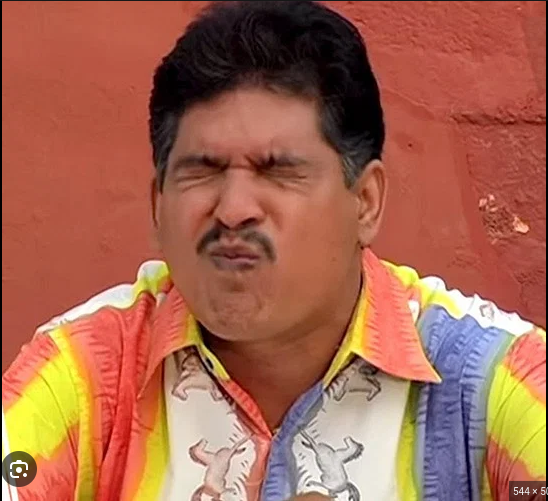

Pesrettu

Description
Sarvadu
Ingredients
- 1 cup green moong dal
- 2 tablespoon raw rice
- 1 teaspoon cumin seeds
- 2 nos green chillies
- 1 inch ginger piece
- 5salt to taste
- water as required
- onion chopped finely
Steps
- To a mixing bowl add 1 cup green moong dal and 2 tablespoon raw rice. Pick any stones and discard if any
- Soak in water for 6-8 hours. Set aside and keep it covered
- Rinse well atleast for 2 times..
- RoaNow add it mixer along with 1 teaspoon cumin seeds, 2 nos green chillies and 1 inch ginger, required salt. Add little water needed to grind it to a thick batter.
- Grind it a smooth batter like idli dosa batter consistency
- Transfer this to a mixing bowl. Rinse the mixer with little water and add it.
- Adjust water and make batter pourable.
- Heat dosa tawa sprinkle water to check. If there is a sharp shh sound then the tawa is ready
- Slightly press the onion so that it gets stuck to the batter. Cook until it turns golden.
- Then flip over and cook for few seconds.
- Now flip over, fold and serve. You can make thick soft dosas too..